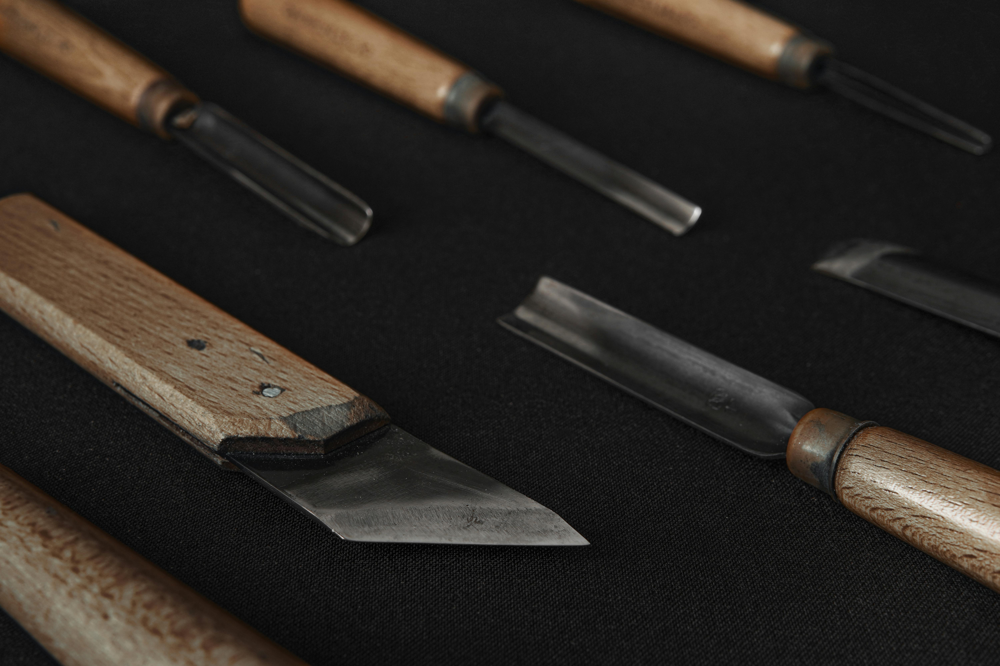
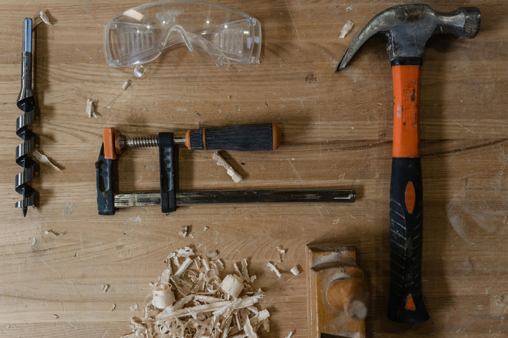
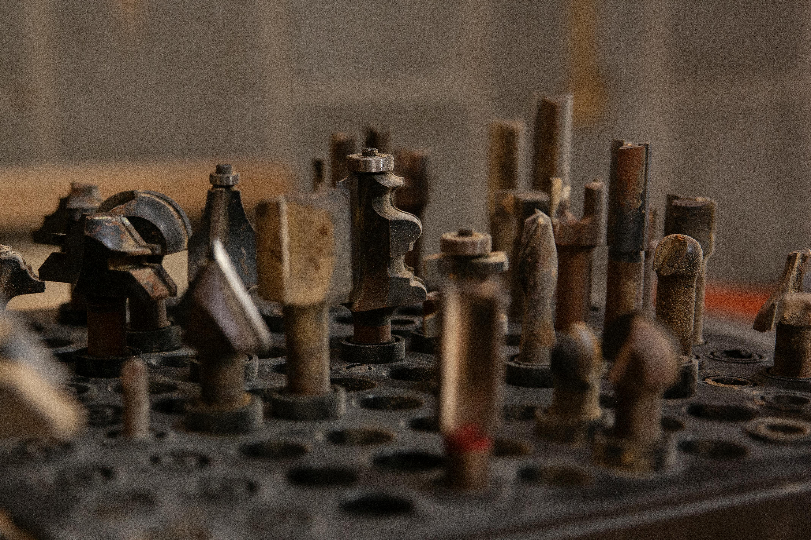

Welcome! My name is Angel Mena, and I am a returnign student at NMSU. Throughout my years in college and in the engineering field, I always found myself looking for an outlet to disconnect from technology and relax my mind. Since the beginning of 2020, I have found this confort in woodworking becasue it brings me the satisfaction of creating things with my hands and challenging my problem solving skills. In this website you will find informaiton about my favorite hobby, woodworking.
Woodworking is the craft of shaping and assembling wood to create functional or decorative objects. It ranges from simple projects like shelves and picture frames to complex pieces like furniture and cabinetry. Using tools such as saws, chisels, and sanders, woodworkers cut, carve, and join wood with precision and creativity. Beyond its practical uses, woodworking is often appreciated as both an art and a skill, combining design, problem-solving, and hands-on craftsmanship. Many people enjoy it as a hobby for its calming, rewarding process, while others pursue it professionally to produce high-quality, custom-built pieces. Here is a link to one of my favorite woodworking youtube channels where they explain many woodworking techniques and projects.
Here is a small list of projects you can try yourself or read about to get a general idea of the projects you can do around your house.



The following tables is a general list of tools organized by skill level based on my experience. My recomendation is to use the tools you are confortable with and do some research on the safety and proper use of more advanced tools as you learn.
| Tool Category | Beginner Tool | Intermediate Tool | Advanced Tool |
|---|---|---|---|
| Cutting | Hand Saw | Circular Saw | Table Saw |
| Drilling | Cordless Drill | Drill Press | Mortiser |
| Shaping | Chisel Set | Router | CNC Router |
| Sanding | Sandpaper | Orbital Sander | Drum Sander |
| Joinery | Wood Glue & Screws | Pocket Hole Jig | Dovetail Jig |